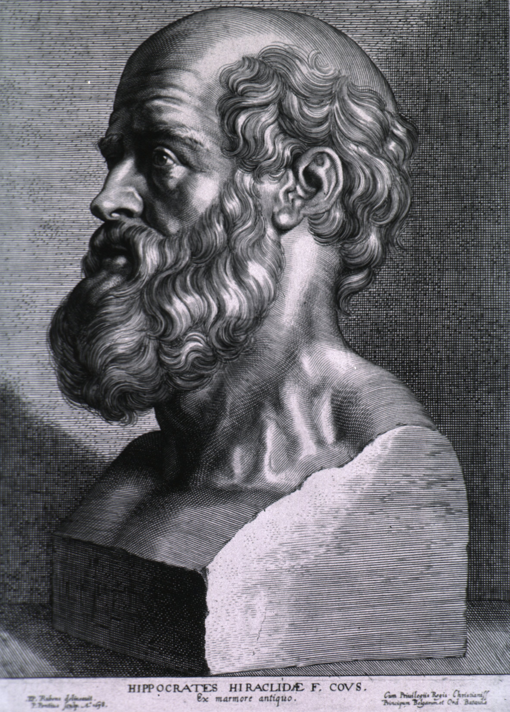

1. Piscem natare doces.
Učiš ribu plivati.
Poučavamo nekoga nešto u čemu je ta osoba već dobra. Naprimjer majka uči dijete pisati no to dijete već posjeduje tu mogućnost.
2. Fortuna caeca est
Sreća je slijepa.
U starom rimu to se mislilo na božicu sreće - Fortunu. Oni su zagovarali da sreća bira bilo koga, i dobre i zle.
3. Mel in ore, fel in corde
Med u ustima, jed u srcu.
Izreka se odnosi na one koji smišljaju neko zlo. Prekrivaju ga umilim govorom no u njhovoj glavi nalazi se zle namjere.
Naprimjer učenik može lijepim i milim riječima kazati da nije varao no u njegovom srcu se nalazi nešto posve drugo.
4. Ibis redibis numquam in bello peribis.
"Ići ćeš, vratiti se, nećeš u ratu poginuti" ILI "Ići ćeš, vratiti se nećeš, u ratu poginuti."
Ova rečenica ima dvosmisleno značenje radi nedefiniranog zareza.
Izrekla ju je proročica Pitija te je izreka vezana us osvajanje svijeta poznatog Aleksandra velikog.
U ovom slučaju i općenito vidi se koliko je važno staviti zarez na pravo mjesto.
5. Eloquentiae unda, sapientiae gutta.
Val rječitosti, kap mudrosti.
Netko može puno govoriti, ali ništa s time nepostiže tj. "ništa ne kaže".
Naprimjer mnogo političara puno toga govori ali ništa od toga ne ispune.
6. Vita brevis, ars longa.
Život je kratak,umjetnost je duga.
Hipokrat je s time htio reći da je život prekratak za potpun razvitak umjetničke sposobnosti.
Znaš li tko je to na pozadinskoj slici ? Klikni ovdje da saznaš.